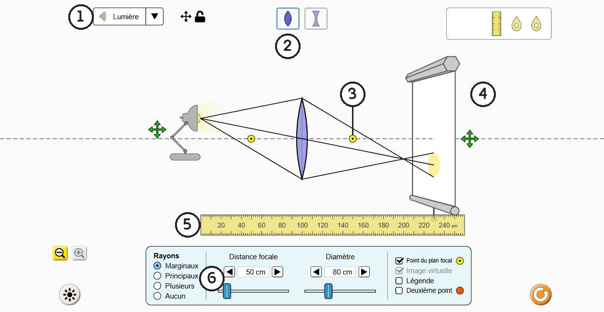
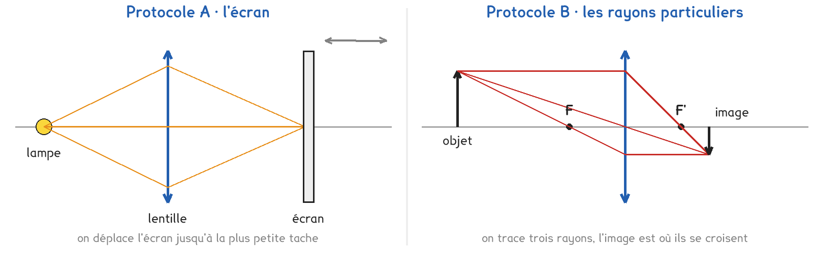
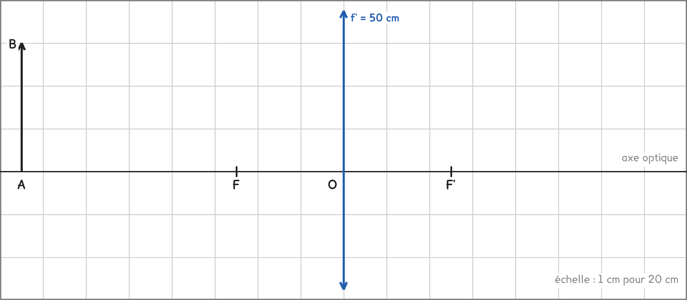

1re Bac Pro · CTRM · TP sur simulation SIM-13
Où placer l'écran pour obtenir une image nette, et comment cette place change-t-elle quand l'objet se rapproche de la lentille ?
3 figures
Sujet. On tient une loupe entre une fenêtre et une feuille blanche : à la bonne distance, l’image de la fenêtre apparaît sur la feuille, nette et à l’envers. Mais si l’on s’avance vers la fenêtre, l’image devient floue.
Problématique : où placer l’écran pour obtenir une image nette, et comment cette place change-t-elle quand l’objet se rapproche de la lentille ?
La simulation. « Optique géométrique », écran « Lentille », sur phet.colorado.edu ; sans réseau, sa copie, fichier phet/geometric-optics_fr.html.

Capture de la simulation « Optique géométrique », PhET Interactive Simulations, University of Colorado Boulder, CC BY-NC 4.0.
a) Écrire dans chaque case le numéro de la figure qui correspond.
| la liste des objets : ……… | la lentille convergente : ……… | un foyer : ……… |
|---|---|---|
| l’écran : ……… | la règle : ……… | la distance focale : ……… |
Le bouton voisin du n° 2 donne une lentille divergente.
b) Entourer la bonne réponse pour chacune des deux lentilles.
| La lentille convergente est plus épaisse | au centre · sur les bords |
|---|---|
| La lentille divergente est plus épaisse | au centre · sur les bords |
La construction de la question g se fait à l’échelle 1 cm pour 20 cm.
c) Convertir à l’échelle. Le premier est fait.
| distance focale 50 cm : 2,5 cm | objet à 150 cm : ……… cm | objet haut de 60 cm : ……… cm |
|---|
Deux protocoles répondent à la même question. Une partie de la classe prend A, l’autre prend B, et on compare à la fin.

Protocole A · l’écran. Une lampe éclaire la lentille et un écran recueille la lumière. On place la lampe, puis on déplace l’écran jusqu’à ce que la tache de lumière soit la plus petite : l’image est nette. On mesure alors la distance entre la lentille et l’écran.
Protocole B · les rayons particuliers. La simulation trace trois rayons partis du haut d’une flèche : l’image se forme là où ils se croisent. On mesure sa distance à la lentille, sa taille et son sens.
d) Compléter le tableau pour comparer les deux protocoles.
| Protocole A | Protocole B | |
|---|---|---|
| L’objet choisi dans la liste | …………………………… | …………………………… |
| Comment on repère l’image | …………………………… | …………………………… |
| On obtient la taille et le sens de l’image | oui · non | oui · non |
Le choix se fait maintenant, avant de toucher à la simulation.
e) Quel protocole prenez-vous ? Justifier en une phrase. Le professeur peut vous imposer l’un des deux pour équilibrer la classe.
Je prends le protocole ……… parce que ……………………………………………………………………
f) Avant de mesurer : quand l’objet s’approche, l’image nette, entourer :
se rapproche de la lentille · s’en éloigne · ne bouge pas
Avant de commencer. Le panneau du bas doit afficher « Distance focale » ; sinon, ⚙ en bas à droite, « Commander la distance focale » sur « direct ». Régler « Distance focale » sur 50 cm. Sortir la règle horizontale de la boîte en haut à droite. Cliquer le cadenas près de la liste des objets : l’objet ne bougera plus qu’à l’horizontale.
La construction se fait avant les mesures, quel que soit le protocole.
g) Construire l’image A’B’ de l’objet AB, placé à 150 cm de la lentille, avec les trois rayons particuliers issus de B.

h) Relever les mesures. Les lignes B sont pour le protocole B seulement.
| Distance lentille-objet (cm) | 75 | 100 | 150 | 200 |
|---|---|---|---|---|
| Distance lentille-image nette (cm) | ||||
| B · taille de l’image (cm) | ||||
| B · sens de l’image : droite ou renversée |
i) Votre hypothèse de la question f est-elle confirmée ? Un groupe qui a pris l’autre protocole trouve-t-il les mêmes distances ?
j) Sur votre construction, mesurer OA’ et A’B’ en centimètres, les convertir avec l’échelle, et les comparer à la colonne 150 cm du tableau.
On compte les distances à partir du centre O de la lentille, négatives à gauche, positives à droite : l’objet à 100 cm est en OA = −100 cm.
k) La relation de conjugaison s’écrit 1/OA’ − 1/OA = 1/f’. La vérifier pour l’objet à 100 cm, avec votre mesure de OA’.
l) Sur un vrai banc d’optique, avec une lampe, une lentille et un écran, citer deux difficultés que la simulation ne montre pas.
m) Répondre à la problématique en deux phrases.
Ce que ce TP a établi, et qui vaut pour toute lentille convergente :
À RETENIR
Une lentille convergente, plus épaisse au centre, a deux foyers F et F’, à la distance focale f’ de son centre O. Un objet placé au-delà du foyer F donne une image réelle, renversée, qu’on recueille nette sur un écran.
Trois rayons suffisent à la construire : parallèle à l’axe, il ressort par F’ ; par O, il n’est pas dévié ; par F, il ressort parallèle à l’axe.
Plus l’objet s’approche du foyer, plus l’image nette s’éloigne et grandit.
Placer la flèche à 30 cm de la lentille, plus près que le foyer. Les rayons se croisent-ils après la lentille ? Avec « Image virtuelle » cochée, où est l’image, et dans quel sens ?
TP sur simulation de physique-chimie. Le travail se fait sur la feuille du TP : cette page en est la version à l'écran, sans les lignes à remplir. Rien n'est enregistré.